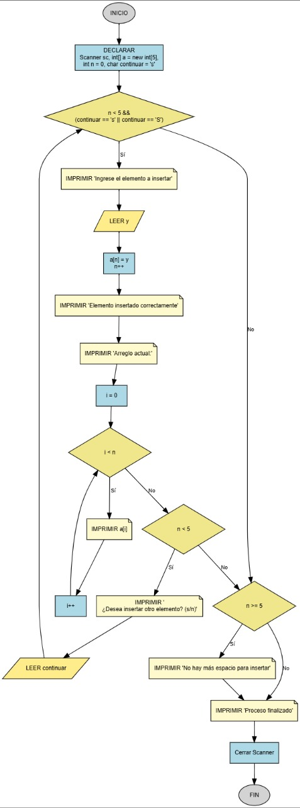

Insertar Elemento (Arreglo Desordenado)
Escribe un programa que permita al usuario añadir números a un arreglo uno por uno. El programa debe continuar pidiendo números hasta que el usuario decida parar o el arreglo se llene.

Requisitos
Todo el código debe estar dentro del método main.
- Usa un arreglo con una capacidad fija (ej. 5 o 10).
- Dentro de un bucle
while, pide un número con:"Ingrese el elemento a insertar: ". - Inserta el número al final del arreglo y muestra:
"Elemento insertado correctamente.". - Muestra el estado actual del arreglo con:
"Arreglo actual: [num1] [num2] ...". - Pregunta al usuario si quiere continuar con:
"¿Desea insertar otro elemento? (s/n)". - El bucle debe terminar si el usuario responde algo diferente a 's' o 'S', o si el arreglo se llena.
- Si el arreglo se llena, muestra el mensaje:
"No hay más espacio para insertar elementos.". - Al final de todo, imprime:
"Proceso finalizado.".
Ejemplo de uso esperado
Ingrese el elemento a insertar: 10
Elemento insertado correctamente.
Arreglo actual: 10
¿Desea insertar otro elemento? (s/n)
s
Ingrese el elemento a insertar: 20
Elemento insertado correctamente.
Arreglo actual: 10 20
¿Desea insertar otro elemento? (s/n)
n
Proceso finalizado.